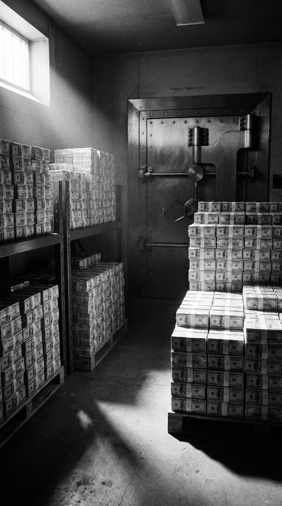

A SIGNAL · MAY 2026
Warren Buffett
has a recession signal.
WALL STREET CALLS IT
The
BUFFETT
INDICATOR
TOTAL US MARKET CAP
$62T
US GDP
$30T
=
BUFFETT INDICATOR
BUFFETT, FORTUNE 2001
“
The best single measure of where market valuations stand at any given moment.
Warren Buffett
CHAIRMAN · BERKSHIRE HATHAWAY
BUFFETT INDICATOR · 1995–2007
BI
Buffett Indicator
Wilshire 5000 · US GDP
0%
+95% to 2000 peak
Mar 1995 – Mar 2000
1Y
3Y
5Y
10Y
12Y
MAX
SOURCE · WILSHIRE 5000 / US BUREAU OF ECONOMIC ANALYSIS
SEVEN YEARS
OF NOTHING.
BUFFETT INDICATOR · MAY 2026
209%
OF GDP
Long-run avg
80%
Dotcom peak
146%
Today
209%
HISTORICALLY · AT 200%+
THE NEXT
DECADE WAS
FLAT OR
NEGATIVE.
NEGATIVE.
May 2026 · Berkshire Hathaway
Berkshire's cash
pile tops
$380B.
Source · Bloomberg Intelligence
13F filing · Q1 2026 · all-time high
NOT
BUYING
THE INDEX.
BUYING
THE INDEX.
NOT
ROTATING
TO BONDS.
ROTATING
TO BONDS.

SITTING
IN CASH.
IN CASH.
$0B
209% · MARKET CAP TO GDP · MAY 2026
BLOOM
FOR MORE INVESTING KNOWLEDGE